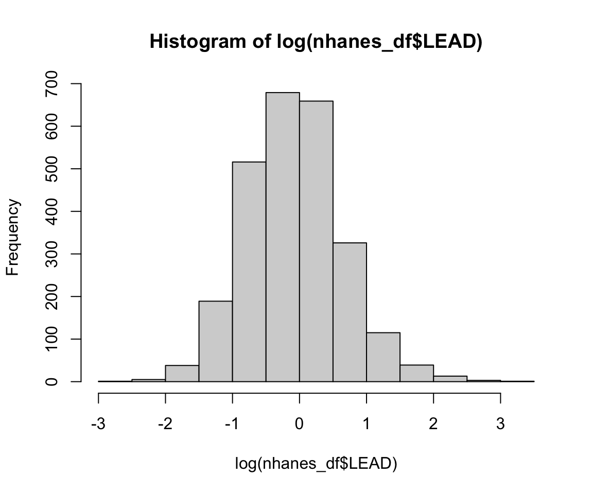
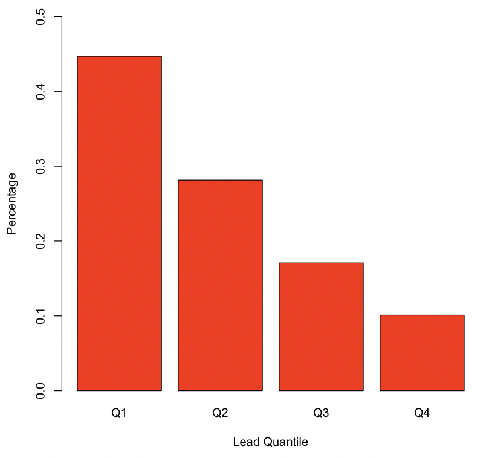
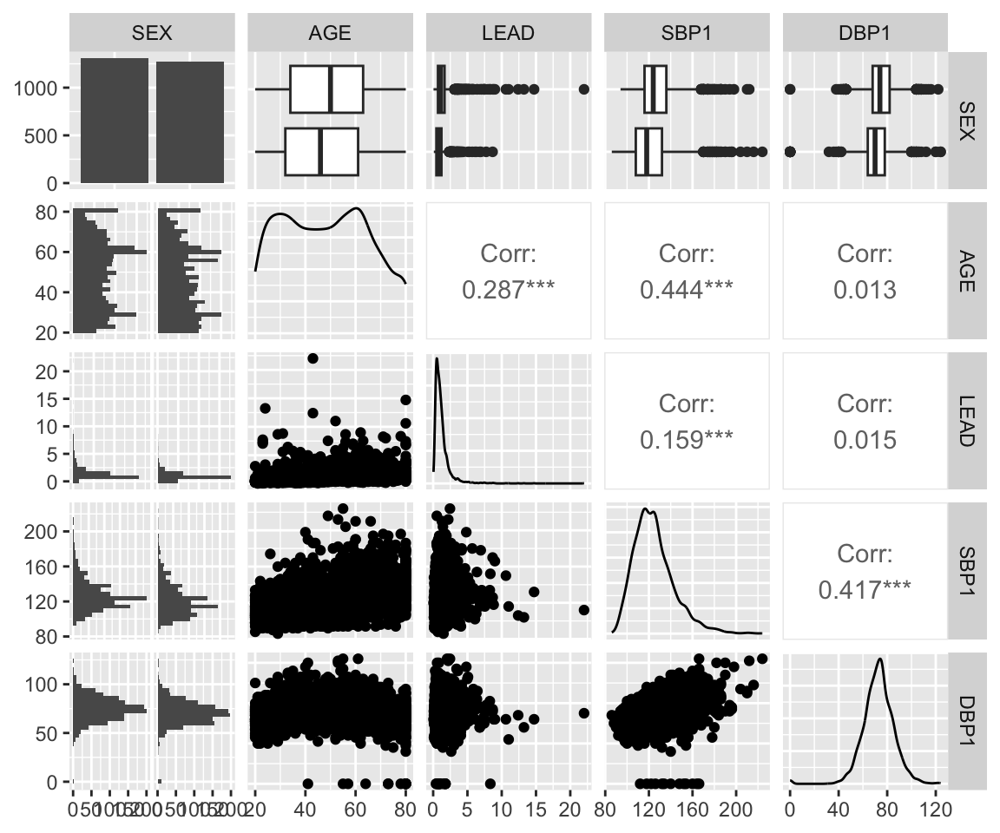
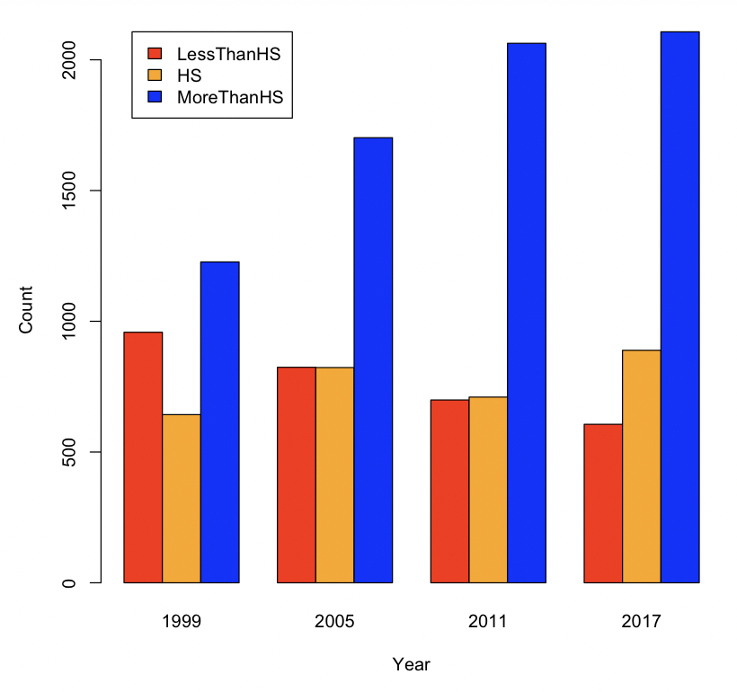
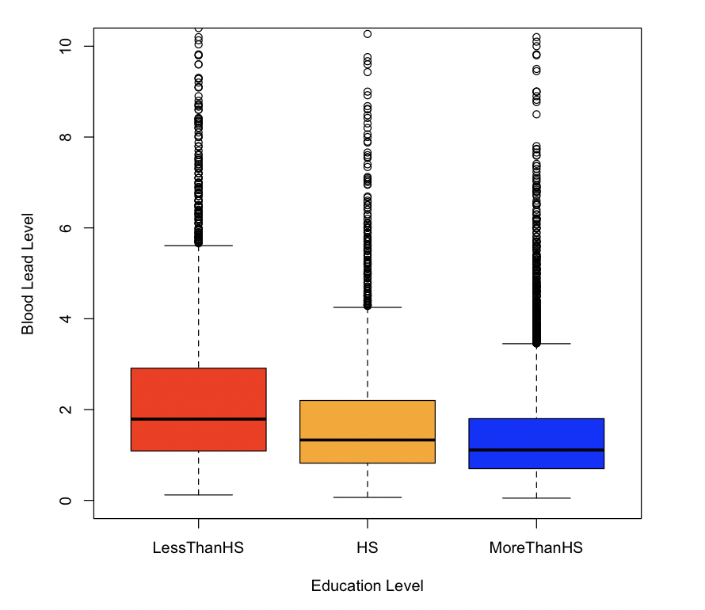

library(HDSinRdata)
library(GGally)
library(gt)
library(gtsummary)4 Intro to Exploratory Data Analysis
In the last chapter, we learned about loading data into R and practiced selecting and summarizing columns and rows of the data. In this chapter, we learn how to conduct more exploratory analysis, focusing on the univariate and bivariate sample distributions of the data. The first half focuses on using base R to create basic plots and summaries. In the second half, we show how to create summary plots using the GGally package (Schloerke et al. 2021) and tables using the gt (Iannone et al. 2023) and gtsummary (Sjoberg et al. 2023) packages.
4.1 Univariate Distributions
In this chapter, we use a sample of the National Health and Nutrition Examination Survey (Centers for Disease Control and Prevention (CDC) 1999-2018) containing lead, blood pressure, BMI, smoking status, alcohol use, and demographic variables from NHANES 1999-2018. Variable selection and feature engineering followed the analysis in Huang (2022). There are 31,625 observations in this sample. Use the help operator ?NHANESsample to read the column descriptions.
data(NHANESsample)
dim(NHANESsample)
#> [1] 31265 21
names(NHANESsample)
#> [1] "ID" "AGE" "SEX" "RACE"
#> [5] "EDUCATION" "INCOME" "SMOKE" "YEAR"
#> [9] "LEAD" "BMI_CAT" "LEAD_QUANTILE" "HYP"
#> [13] "ALC" "DBP1" "DBP2" "DBP3"
#> [17] "DBP4" "SBP1" "SBP2" "SBP3"
#> [21] "SBP4"To start our exploration, we look at whether there are any missing values. We use the complete.cases() function to observe that there are no complete cases. We also see that the subsequent blood pressure measurements and alcohol use have the highest percentage of missing values. For demonstration, we choose to only keep the first systolic and diastolic blood pressure measurements and do a complete case analysis using the na.omit() function to define our complete data frame nhanes_df.
sum(complete.cases(NHANESsample))
#> [1] 0
apply(NHANESsample, 2, function(x) sum(is.na(x)))/nrow(NHANESsample)
#> ID AGE SEX RACE EDUCATION
#> 0.000000 0.000000 0.000000 0.000000 0.000672
#> INCOME SMOKE YEAR LEAD BMI_CAT
#> 0.000000 0.000000 0.000000 0.000000 0.000000
#> LEAD_QUANTILE HYP ALC DBP1 DBP2
#> 0.000000 0.000000 0.026867 0.060035 0.063905
#> DBP3 DBP4 SBP1 SBP2 SBP3
#> 0.070974 0.891124 0.060035 0.063905 0.070942
#> SBP4
#> 0.891124nhanes_df <- na.omit(subset(NHANESsample,
select = -c(SBP2, SBP3, SBP4, DBP2, DBP3,
DBP4)))In the last chapter, we introduced the table() and summary() functions to quickly summarize categorical and quantitative vectors. We can observe that over half of the observations never smoked and that the most recent NHANES cycle in the data is 2017-2018.
table(nhanes_df$SMOKE)
#>
#> NeverSmoke QuitSmoke StillSmoke
#> 13774 8019 6799
summary(nhanes_df$YEAR)
#> Min. 1st Qu. Median Mean 3rd Qu. Max.
#> 1999 2003 2007 2008 2011 2017We decide to select the most recent observations from NHANES 2017-2018 for our analysis in this chapter. We use the subset() function to select these rows.
nhanes_df <- subset(nhanes_df, nhanes_df$YEAR == 2017)As shown, smoking status has been coded into three categories: “NeverSmoke”, “QuitSmoke”, and “StillSmoke”. We want to create a new column to represent whether someone has ever smoked. To do so, we use the ifelse() function, which allows us to create a new vector using logic. The logic captured by this function is that we want to use one value if we meet some condition, and we want to use a second value if the condition is not met. The first argument is a vector of TRUE/FALSE values representing the conditions, the next argument is the value or vector to use if we meet the condition(s), and the last argument is the value or vector to use otherwise. We use this function to create a new vector EVER_SMOKE that is equal to “Yes” for those who are either still smoking or quit smoking and equal to “No” otherwise.
nhanes_df$EVER_SMOKE <- ifelse(nhanes_df$SMOKE %in% c("QuitSmoke",
"StillSmoke"),
"Yes", "No")
table(nhanes_df$EVER_SMOKE)
#>
#> No Yes
#> 1411 1173If we did not want to store this new column, we could use the pipe operator |> to send the output directly to the table() function. The pipe operator takes the result on the left-hand side and passes it as the first argument to the function on the right-hand side.
ifelse(nhanes_df$SMOKE %in% c("QuitSmoke", "StillSmoke"),
"Yes", "No") |>
table()
#>
#> No Yes
#> 1411 1173The summary() and table() functions allow us to summarize the univariate sample distributions of columns. We may also want to plot these distributions. We saw in Chapter 3 that the hist() function creates a histogram plot. We use this function to plot a histogram of the log transformation of the lead column.
hist(log(nhanes_df$LEAD))
If we want to polish this figure, we can use some of the other optional arguments to the hist() function. For example, we may want to update the text log(nhanes_df$lead) in the title and x-axis. In the following code, we update the color, labels, and number of bins for the plot. The function colors() returns all recognized colors in R. The argument breaks specifies the number of bins to use to create the histogram, col specifies the color, main specifies the title of the plot, and xlab specifies the x-axis label (using ylab would specify the y-axis label). Read the documentation ?hist for the full list of arguments available.
hist(log(nhanes_df$LEAD), breaks = 30, col = "blue",
main = "Histogram of Log Blood Lead Level",
xlab = "Log Blood Lead Level")For categorical columns, we may want to plot the counts in each category using a barplot. The function barplot() asks us to specify the names and heights of the bars. To do so, we need to store the counts for each category. Again, we update the color and labels.
smoke_counts <- table(nhanes_df$SMOKE)
barplot(height = smoke_counts, names = names(smoke_counts),
col = "violetred", xlab="Smoking Status", ylab="Frequency")With a barplot, we can even specify a different color for each bar. To do so, col must be a vector of specified colors with the same length as the number of categories.
barplot(height = smoke_counts, names = names(smoke_counts),
col = c("orange", "violetred", "blue"),
xlab = "Smoking Status", ylab = "Frequency")
4.1.1 Practice Question
Recreate the barplot in Figure 4.1 below showing the proportion of values in each LEAD_QUANTILE category.

# Insert your solution here:4.2 Bivariate Distributions
We now turn our attention to relationships among multiple columns. When we have two categorical columns, we can use the table() function to find the counts across all combinations. For example, we look at the distribution of smoking status levels by sex. We observe that a higher percentage of female participants have never smoked.
table(nhanes_df$SMOKE, nhanes_df$SEX)
#>
#> Male Female
#> NeverSmoke 596 815
#> QuitSmoke 390 241
#> StillSmoke 324 218To look at the sample distribution of a continuous column stratified by a categorical column, we can call the summary() function for each subset of the data. In the subsequent code, we look at the distribution of blood lead level by sex and observe higher blood lead levels in male observations.
summary(nhanes_df$LEAD[nhanes_df$SEX == "Female"])
#> Min. 1st Qu. Median Mean 3rd Qu. Max.
#> 0.10 0.47 0.77 0.98 1.21 8.67
summary(nhanes_df$LEAD[nhanes_df$SEX == "Male"])
#> Min. 1st Qu. Median Mean 3rd Qu. Max.
#> 0.05 0.70 1.09 1.46 1.66 22.01We can also observe this visually through a boxplot. When given one categorical column and one continuous column, the plot() function creates a boxplot. By default, the first argument is the x-axis and the second argument is the y-axis.
plot(nhanes_df$SEX, log(nhanes_df$LEAD), ylab = "Log Blood Lead Level",
xlab = "Sex")Alternatively, we can use the boxplot() function, which can be passed a formula. A formula is a string representation of how to group the data, where the left-hand side is the continuous column, and the right-hand side is one or more categorical columns to group by. In the following case, we group by multiple columns, SEX and EVER_SMOKE, so our formula is log(LEAD) ~ SEX + EVER_SMOKE. The second argument to the function specifies the data. We specify the column colors to show the link between the boxplots shown.
boxplot(log(LEAD) ~ SEX + EVER_SMOKE, data = nhanes_df,
col=c("orange", "blue", "orange", "blue"),
xlab = "Sex : Ever Smoked", ylab = "Log Blood Lead Level")To visualize the bivariate distributions between two continuous columns, we can use scatter plots. To create a scatter plot, we use the plot() function again. We use this function to show the relationship between systolic and diastolic blood pressure.
plot(nhanes_df$SBP1, nhanes_df$DBP1, col = "blue",
xlab = "Systolic Blood Pressure",
ylab = "Diastolic Blood Pressure")
The two measures of blood pressure look highly correlated. We can calculate their Pearson and Spearman correlation using the cor() function. The default method is the Pearson correlation, but we can also calculate the Kendall or Spearman correlation by specifying the method.
cor(nhanes_df$SBP1, nhanes_df$DBP1)
#> [1] 0.417
cor(nhanes_df$SBP1, nhanes_df$DBP1, method = "spearman")
#> [1] 0.471We may also want to add some extra information to our plot. This time, instead of specifying the color manually, we use the column hyp, an indicator for hypertension, to specify the color. We have to make sure this vector is a factor for R to color by group. Additionally, we add a blue vertical and horizontal line using the abline() function to mark cutoffs for hypertension. Even though this function is called after plot(), the lines are automatically added to the current plot. We can see that most of those with hypertension have systolic or diastolic blood pressure measurements above this threshold.
plot(nhanes_df$SBP1, nhanes_df$DBP1, col = as.factor(nhanes_df$HYP),
xlab = "Systolic Blood Pressure",
ylab = "Diastolic Blood Pressure")
abline(v = 130, col = "blue")
abline(h = 80, col = "blue")The previous plots are all displayed as a single figure. If we want to display multiple plots next to each other, we can specify the graphical parameters using the par() function by updating the argument mfrow = c(nrow, ncol) with the number of columns and rows we would like to use for our figures. We use this to display the distribution of log blood lead level between those with and without hypertension next to the previous plot.
par(mfrow = c(1, 2))
# boxplot
boxplot(log(LEAD) ~ HYP, data = nhanes_df, xlab = "Hypertension",
ylab = "Log Blood Lead Level")
# scatter plot
plot(nhanes_df$SBP1, nhanes_df$DBP1, col = as.factor(nhanes_df$HYP),
xlab = "Systolic Blood Pressure",
ylab = "Diastolic Blood Pressure")
abline(v = 130, col = "blue")
abline(h = 80, col = "blue")
We then reset to only display a single plot for future images using the par() function again.
par(mfrow = c(1, 1))4.2.1 Practice Question
Recreate the three boxplots in Figure 4.2 (one for each education level) of income by BMI category and arrange them next to each other using the par() function.
# Insert your solution here:4.3 Autogenerated Plots
In the previous sections, we learned some new functions for visualizing the relationship between columns. The GGally package contains some useful functions for looking at multiple univariate and bivariate relationships at the same time, such as the ggpairs() function. The function ggpairs() takes the data as its first argument. By default, it plots the pairwise distributions for all columns, but we can also specify to only select a subset of columns using the columns argument. You can see in the following example that it plots barplots and density plots for each univariate sample distribution. It then plots the bivariate distributions and calculates the Pearson correlation for all pairs of continuous columns. That’s a lot of information!
ggpairs(nhanes_df, columns = c("SEX", "AGE", "LEAD", "SBP1", "DBP1"))
Another useful function in this package is the ggcorr() function. This function takes in a data frame with only numeric columns and displays the correlation between all pairs of columns, where the color of each grid cell indicates the strength of the correlation. The additional argument label=TRUE prints the actual correlation value on each grid cell. This is a useful way to identify pairs of strongly correlated columns. Note that we used the pipe operator again to find the correlation on the continuous columns without saving this subset of data.
nhanes_df[, c("AGE", "LEAD", "SBP1", "DBP1")] |>
ggcorr(label = TRUE)
4.4 Tables
Another useful way to display information about your data is through tables. For example, it is standard practice in articles to have the first table in the paper give information about the study sample, such as the mean and standard deviation for all continuous columns and the proportions for categorical columns. The gt package is designed to create polished tables that can include footnotes, titles, column labels, etc. The gtsummary package is an extension of this package that can create summary tables. We focus on the latter but come back to creating nice tables in Chapter 22.
To start, we create a gt object (a special type of table) of the first six rows of our data using the gt() function. You can see the difference in the formatting as opposed to printing the data.
gt(head(nhanes_df[, c("ID", "AGE", "SEX", "RACE")])) | ID | AGE | SEX | RACE |
|---|---|---|---|
| 93711 | 56 | Male | Other Race |
| 93713 | 67 | Male | Non-Hispanic White |
| 93716 | 61 | Male | Other Race |
| 93717 | 22 | Male | Non-Hispanic White |
| 93721 | 60 | Female | Mexican American |
| 93722 | 60 | Female | Non-Hispanic White |
We now show you how to use the tbl_summary() function in the gtsummary package. The first argument to this function is again the data frame. By default, this function summarizes all the columns in the data. Instead, we use the include argument to specify a list of columns to include. We then pipe this output to the function as_gt(), which creates a gt table from the summary output. Note that the table computes the total number of observations and the proportions for categorical columns and the median and interquartile range for continuous columns.
tbl_summary(nhanes_df,
include = c("SEX", "RACE", "AGE", "EDUCATION", "SMOKE",
"BMI_CAT", "LEAD", "SBP1", "DBP1", "HYP")) |>
as_gt()| Characteristic | N = 2,5841 |
|---|---|
| SEX | |
| Male | 1,310 (51%) |
| Female | 1,274 (49%) |
| RACE | |
| Mexican American | 358 (14%) |
| Other Hispanic | 225 (8.7%) |
| Non-Hispanic White | 992 (38%) |
| Non-Hispanic Black | 568 (22%) |
| Other Race | 441 (17%) |
| AGE | 48 (33, 62) |
| EDUCATION | |
| LessThanHS | 373 (14%) |
| HS | 593 (23%) |
| MoreThanHS | 1,618 (63%) |
| SMOKE | |
| NeverSmoke | 1,411 (55%) |
| QuitSmoke | 631 (24%) |
| StillSmoke | 542 (21%) |
| BMI_CAT | |
| BMI<=25 | 663 (26%) |
| 25<BMI<30 | 808 (31%) |
| BMI>=30 | 1,113 (43%) |
| LEAD | 0.93 (0.56, 1.44) |
| SBP1 | 122 (112, 134) |
| DBP1 | 72 (66, 80) |
| HYP | 1,451 (56%) |
| 1 n (%); Median (IQR) | |
We can update our table by changing some of its arguments. This time, we specify that we want to stratify our table by hypertension status so that the table summarizes the data by this grouping. Additionally, we change how continuous columns are summarized by specifying that we want to report the mean and standard deviation instead of the median and interquartile range. We do this using the statistic argument. The documentation for the tbl_summary() function can help you format this argument depending on which statistics you would like to display.
tbl_summary(nhanes_df,
include = c("SEX", "RACE", "AGE", "EDUCATION", "SMOKE",
"BMI_CAT", "LEAD", "SBP1", "DBP1", "HYP"),
by = "HYP",
statistic = list(all_continuous() ~ "{mean} ({sd})")) |>
as_gt() | Characteristic | 0, N = 1,1331 | 1, N = 1,4511 |
|---|---|---|
| SEX | ||
| Male | 472 (42%) | 838 (58%) |
| Female | 661 (58%) | 613 (42%) |
| RACE | ||
| Mexican American | 186 (16%) | 172 (12%) |
| Other Hispanic | 104 (9.2%) | 121 (8.3%) |
| Non-Hispanic White | 429 (38%) | 563 (39%) |
| Non-Hispanic Black | 203 (18%) | 365 (25%) |
| Other Race | 211 (19%) | 230 (16%) |
| AGE | 40 (15) | 55 (16) |
| EDUCATION | ||
| LessThanHS | 151 (13%) | 222 (15%) |
| HS | 250 (22%) | 343 (24%) |
| MoreThanHS | 732 (65%) | 886 (61%) |
| SMOKE | ||
| NeverSmoke | 678 (60%) | 733 (51%) |
| QuitSmoke | 220 (19%) | 411 (28%) |
| StillSmoke | 235 (21%) | 307 (21%) |
| BMI_CAT | ||
| BMI<=25 | 392 (35%) | 271 (19%) |
| 25<BMI<30 | 351 (31%) | 457 (31%) |
| BMI>=30 | 390 (34%) | 723 (50%) |
| LEAD | 1.03 (1.15) | 1.37 (1.25) |
| SBP1 | 112 (10) | 134 (18) |
| DBP1 | 67 (9) | 77 (14) |
| 1 n (%); Mean (SD) | ||
Outside of the gt and gtsummary packages, another common package used to create summary tables is the tableone package (Yoshida and Bartel 2022), which is not covered in this book.
4.5 Recap Video
4.6 Exercises
For these exercises, we continue using the nhanes_df data.
Using both numerical and graphical summaries, describe the distribution of the first diastolic blood pressure reading
DBP1among study participants. Then, create a column calledINCOME_CATwith two categories: “low” for those whose income is at most 2 and “not low” otherwise, and examine the bivariate distribution ofDBP1andINCOME_CAT. Arrange the two plots next to each other. What do you notice?Create a subset of the data containing only adults between the ages of 20 and 55, inclusive. Then, explore how blood pressure varies by age and gender among this age group. Is there a visible trend in blood pressure with increasing age among either sex?
For males between the ages of 50 and 59, compare blood pressure across race as reported in the race column. Then, create a summary table stratified by the race column and report the mean, standard deviation, minimum, and maximum values for all continuous columns.
Recreate the plots in Figure 4.3 and Figure 4.4. Based on these plots, what trend do you expect to see in blood lead levels over time? Check your answer to the previous question by plotting these two columns against each other.

